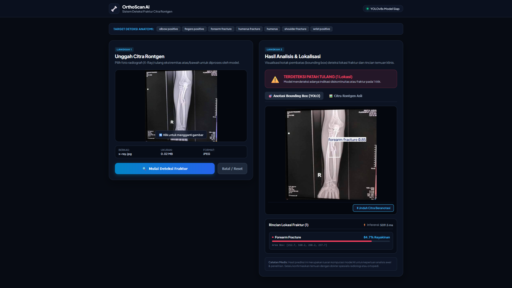

LANGKAH 1
Unggah Citra Rontgen
Pilih foto radiografi (X-Ray) tulang ekstremitas atas/bawah untuk diproses deteksi lokasi fraktur oleh model.
Atau coba sampel radiografi:
Klik atau Tarik Foto X-Ray ke Sini
Mendukung format JPG, PNG, WEBP (Maksimal 10 MB)
LANGKAH 2
Hasil Analisis & Lokalisasi
Visualisasi kotak pembatas (bounding box) deteksi lokasi fraktur dan rincian temuan klinis.

Rincian Lokasi & Tingkat Keyakinan:
⚡ Inferensi: 472ms
Forearm fracture
94.8% Akurasi
Catatan Klinis: OrthoScan AI dirancang sebagai sistem pendukung keputusan (Computer-Aided Diagnosis / CAD). Hasil deteksi model wajib diverifikasi oleh dokter spesialis radiologi atau ortopedi sebelum tindakan medis dilakukan.